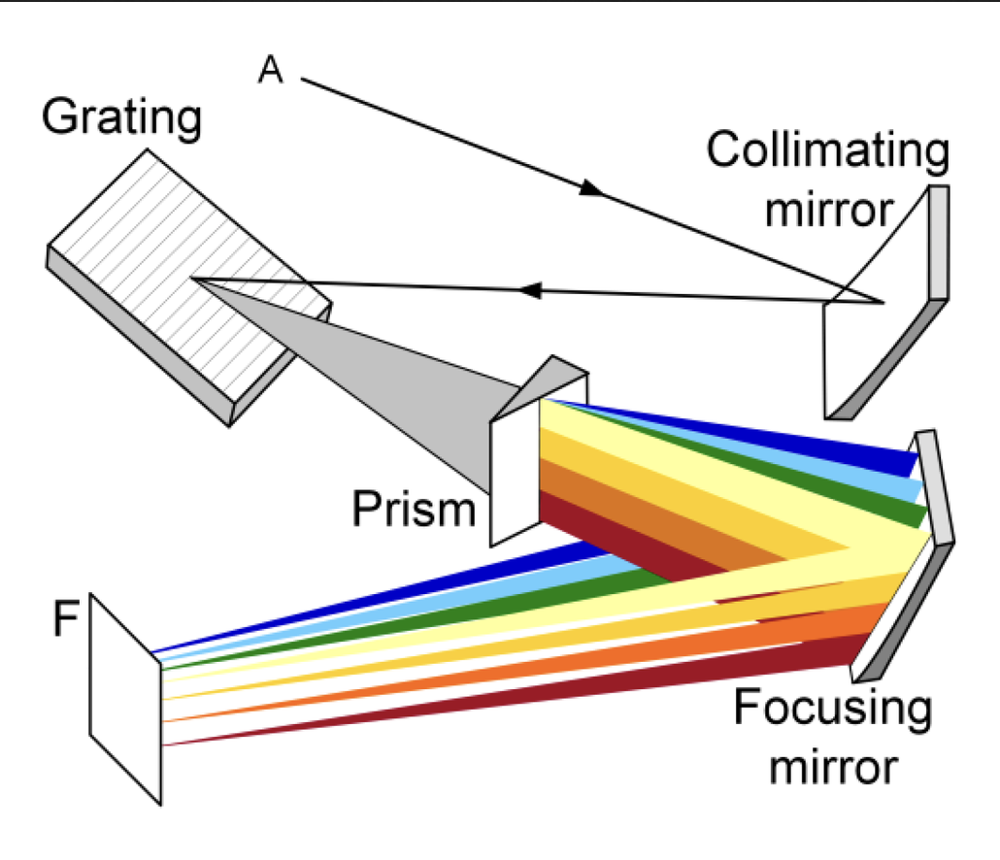
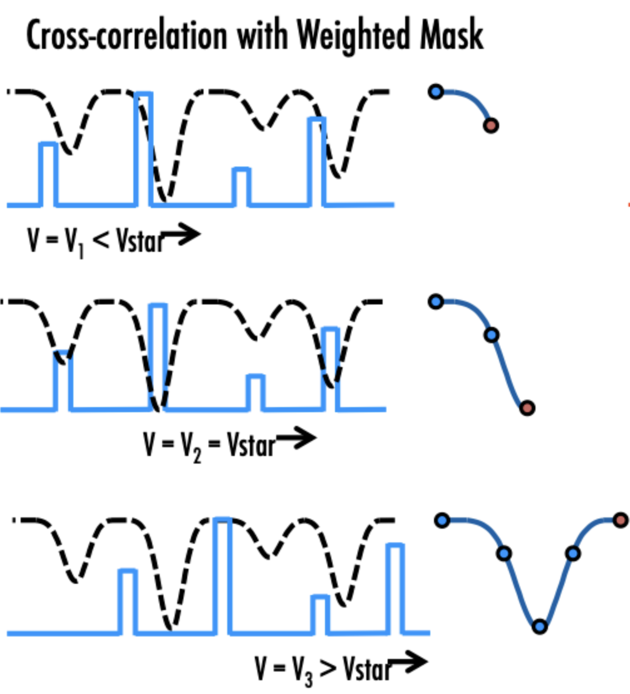
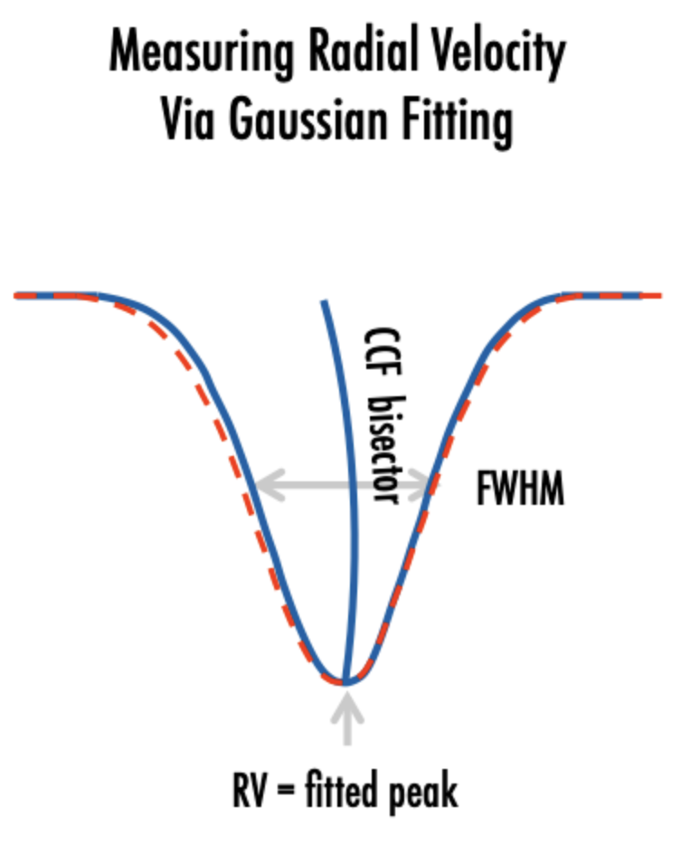
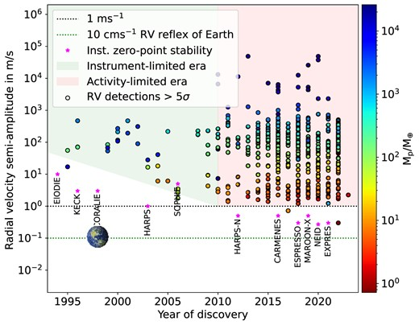
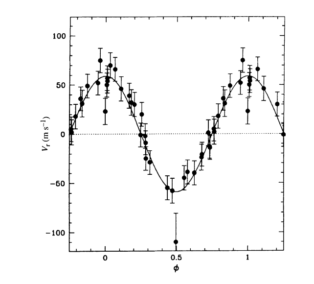
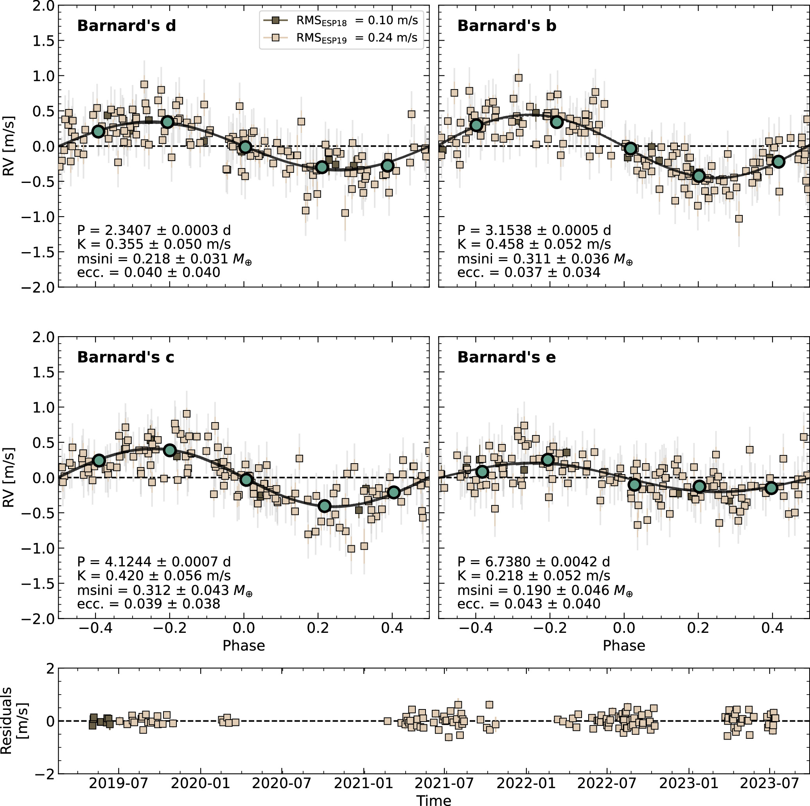
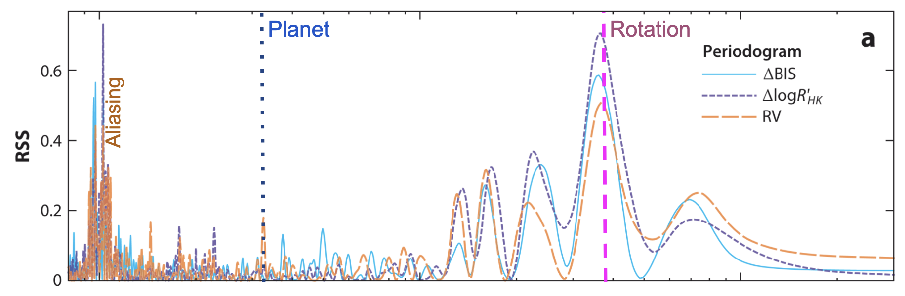
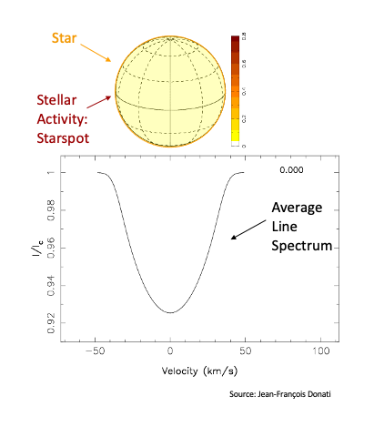
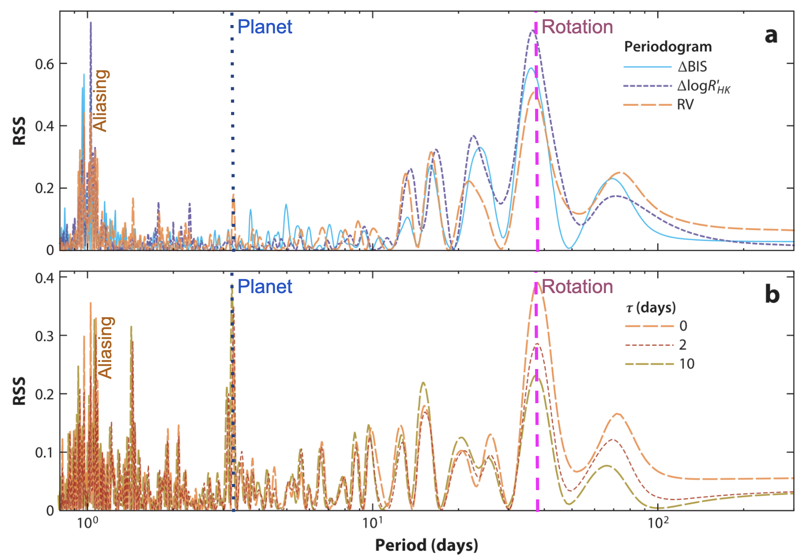

## Stellar Spectroscopy <div class="fragment" markdown="1"> Early spectroscopy found different spectral features and ordered A-O (with A showing the strongest Hydrogen lines) </div> <span class="fragment">[Annie-Jump Cannon](https://en.wikipedia.org/wiki/Annie_Jump_Cannon) reordered & simplified this system, and [Cecilia Payne](https://en.wikipedia.org/wiki/Cecilia_Payne-Gaposchkin) showed the fundamentally varying parameter was **surface temperature**.</span> <div class="fragment" markdown="1"> <img src="https://external-content.duckduckgo.com/iu/?u=https%3A%2F%2Fwww.researchgate.net%2Fprofile%2FXiangru-Li%2Fpublication%2F335346344%2Ffigure%2Ffig2%2FAS%3A933629706395648%401599606076448%2FThe-importance-scores-of-stellar-spectrum-features-on-the-JSP-spectral-data-The-above.png" class="r-stretch" /> </div> <!--<img src="https://external-content.duckduckgo.com/iu/?u=https%3A%2F%2Flibrary.cfa.harvard.edu%2Fsites%2Fg%2Ffiles%2Fomnuum1806%2Ffiles%2F2024-11%2Fstarspectra_rbg.jpg" class="r-stretch" />--> -v- Stars all show a mix of two things: 1) **Blackbody emission** <div class="fragment" markdown="1"> - Photons escaping hot interior </div> <div class="fragment" markdown="1"> - Blackbody peak set by temperature (Wien's law) </div> <div class="fragment" markdown="1"> - Hot stars: bluer, cool stars: redder </div> -v- Stars all show a mix of two things: 2) **Absorption lines** <div class="fragment" markdown="1"> - Photons pass through cooler outer layers </div> <div class="fragment" markdown="1"> - Atoms and/or molecules absorb photons at specific quantum transitions (e.g. electron excitation) and reemit isotropically </div> <div class="fragment" markdown="1"> - This removes flux from specific wavelengths </div> <div class="fragment" markdown="1"> - Which atoms/molecules (and which transitions) absorb is dependent on temperature, composition, etc. </div> <div class="fragment" markdown="1"> - Line shapes are additionally impacted by environment (surface temperature & gravity) </div> -v- We know _a priori_ what wavelength a set of absorption lines has _at rest_ (set by quantum mechanics). <div class="fragment" markdown="1"> Wavelength of absorption spectra -> the velocity of a star. </div> <div class="fragment" markdown="1"> Combining all spectral lines for a star (10,000s) produces the most precise possible velocity measurement. </div> --- ## Spectrographs Modern spectrgraphs use **Echelle gratings**. <div class="fragment" markdown="1"> This disperses a point source (from e.g. a fibre) along one dimension. </div> <div class="fragment" markdown="1"> Another prism disperses the 1D light into 2D across multiple orders </div> <p></p> -v- <img src="https://buil.astrosurf.com/eshel2/vega.jpg" class="r-stretch" /> -v- Modern spectrographs include HARPS, Maroon-X (on 6.5m Gemini), ESPRESSO (on 8m VLT), etc. <div class="fragment" markdown="1"> These are typically placed in extremely finely controlled temperature/pressure conditions to minimise thermal effects on measurements. </div> <div class="fragment" markdown="1"> The Echelle grating for ESPRESSO measures 1.7m in length and is kept within a 10m3 vacuum chamber </div> --- ## Resolution Spectral resolution is defined by the smallest difference in wavelength that can be resolved <div class="fragment" markdown="1"> $R = \lambda / \Delta\lambda$; so for 500nm and 0.05nm $R = 500 / 0.05 = 10,000$; </div> <div class="fragment" markdown="1"> How does this translate to velocity? </div> <div class="fragment" markdown="1"> $\Delta v / c = \Delta \lambda / \lambda$ </div> <span class="fragment">So for modern spectrographs which have $R\sim150,000$, the velocity measurement error _from a single line_ is:</span> <div class="fragment" markdown="1"> $\Delta v = c/R = 3e8/1.5e5 = 2000 m/s$ </div> --- ## Cross correlation <div class="fragment" markdown="1"> To best extract a radial velocity using all absorption lines, we correlate a "template spectrum" with a new spectrum: </div> <div class="fragment" markdown="1"> <img src="https://petercbsmith.github.io/gallery/ccf%20slide%20w%20cred.gif" height=720/> </div> -v- <p></p> <span class="fragment">In reality, a **mask** which marks in & outside of absorption lines (`continuum = 0`, `line = depth`) is used.</span> <span class="fragment">This technique was used _before detectors_ in e.g. CORAVEL. A physical "mask" was mechanically moved in front of the spectrum within the instrument directly producing the cross correlation function from which a radial velocity could be recorded.</span> -v- The resulting "Cross correlation function" is the **summed response of all absorption lines as a function of velocity**. <div class="fragment" markdown="1"> This easily allows radial velocity to be measured, and at a far higher precision than for a single line. </div> <img src="https://content.cld.iop.org/books/10__1088_2514-3433_ab46a3/revision3/bk978-0-7503-1689-7ch5f1_hr.jpg" class="r-stretch" /> -v- <p></p> You can also measure other important metrics from the CCF such as "FWHM" (line width) and "BIS" (line assymetry). These are good indexes to measure **stellar activity** (which can also vary radial velocity). --- ## Signals in RVs Any Keplerian motion of the star causes changes in the radial velocity. <img src="https://external-content.duckduckgo.com/iu/?u=https%3A%2F%2Fstatic.wixstatic.com%2Fmedia%2F8dd287_2d88fdb56e5845189d223415d92da604~mv2.gif" class="r-stretch" /> -v- #### What impacts the RV signal? <div class="fragment" markdown="1"> - Mass ratio ($K \propto M_2/M_1$) </div> <div class="fragment" markdown="1"> - Orbital period ($K \propto P^{1/3}$) </div> <div class="fragment" markdown="1"> - Orbital inclination ($K \propto \sin{i}$) </div> <div class="fragment" markdown="1"> - Orbital eccentricity ($K \propto (1-e^2)^{-1/2}$) </div> -v- Deriving the semi-amplitude: $$ K = \frac{2 \pi a \sin{i}}{P\sqrt{1-e^2}} = \left(\frac{2 \pi G}{P}\right)^{1/3} \frac{M_p \sin{i}}{(M_s + M_p)^{2/3}} \frac{1}{\sqrt{1-e^2}} $$ -v- In more detail, we can derive it more completely: <div class="fragment" markdown="1"> 1) The ratio in semi-major axes ($a_p/(a_p + a_s)$) is the inverse of the mass ratio ($m_p/(m_p + m_s)$). i.e. $a_s/(a_p + a_s) = m_p/(m_p + m_s)$ </div> <div class="fragment" markdown="1"> 2) Angular motion gives us orbital speed of a star/planet (assuming $e=0$): $K_p = v_s = \frac{2\pi a_s}{P}$; substituting for $a_s$, $K_p = \frac{2\pi}{P}\frac{(a_p+a_s) m_p}{m_p + m_s}$ </div> <div class="fragment" markdown="1"> 3) Kepler's third law $a^3 = G(m_p+m_s)P^2/4\pi^2$ (NB this uses relative motion, i.e. $a=(a_p+a_s)$) produces: $K_p = \frac{2\pi}{P}\frac{m_p}{m_p + m_s}\left(\frac{G(m_p+m_s)P^2}{4\pi^2}\right)^{1/3}$ </div> <div class="fragment" markdown="1"> 4) Simplifying gives: $K_p = \left(\frac{2\pi G}{P}\right)^{1/3}\frac{m_p}{(m_p + m_s)^{2/3}}$ </div> 5) <span class="fragment">To adjust to _projected_ radial velocity we must include $\sin{i}$</span> -v- ### Improvement over time: <p></p> [Burt et al](https://arxiv.org/html/2511.01954v1) -v- ### Examples 1995 - Hot Jupiters <p></p> $K=60\,\rm{m}.\rm{s}^{-1}$ -v- ### Examples 2026 - sub-Earth planets <p></p> --- ## Detecting RV planets Keplerians are **periodic**, so typically found by searching in frequency space, e.g.: - [Lomb Scargle](https://iopscience.iop.org/article/10.3847/1538-4365/aab766) - [Generalised LS](https://arxiv.org/abs/1412.0467) - [L1 periodogram](https://github.com/nathanchara/l1periodogram) -v- <p></p> --- ## Stellar Activity <p></p> -v- - <span class="fragment">Starspots are **cooler** regions on stars where convection is suppressed</span> - <span class="fragment">Faculae are **hotter** regions (more sparsely concentrated)</span> - <span class="fragment">Activity **rotates with the stellar surface** </span> <div class="fragment" markdown="1"> - Stellar rotation typically 5-50d (Sun: 27d) </div> -v- We can measure additional signals linked to activity, and remove their influence on the RVs. Tecniques includes simple decorrelation, or more complex Gaussian Processes. <p></p> ---